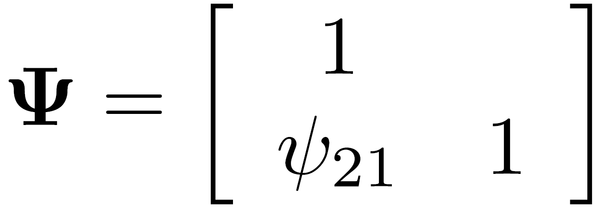
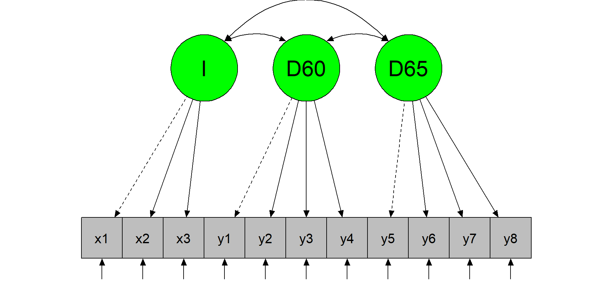
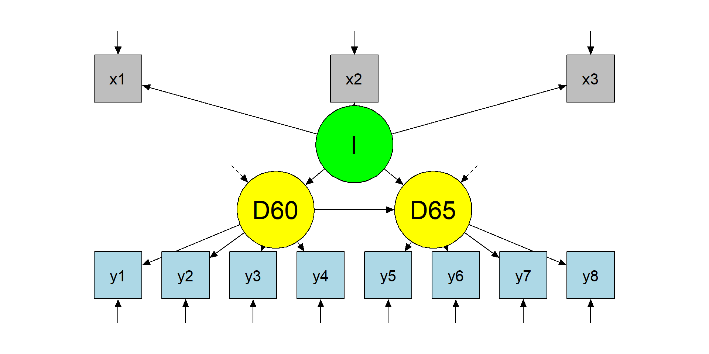
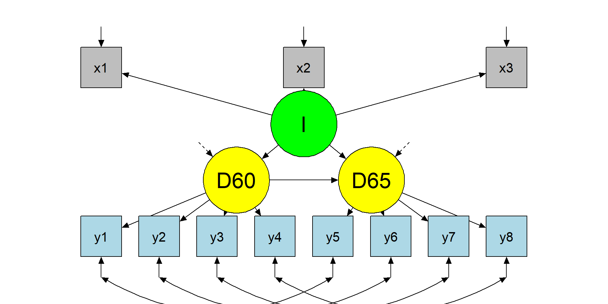
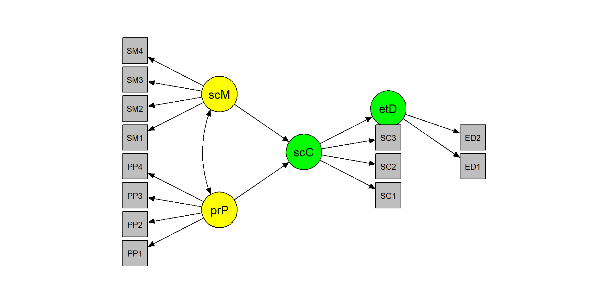

library(lavaan)
dSEM <- simulateData("xi =~ .74*x1 + .65*x2
eta =~ .56*y1 + .75*y2
eta ~ .30*xi
", sample.nobs = 1000)Structural Equation Models
Measurement + structure (capstone)
Tommaso Feraco
Today in the workflow
Specify → Identify → Estimate → Evaluate → Revise/Report
Today: full SEM = measurement model (CFA) + structural model (paths among latent variables).
We will repeat fit/diagnostics on purpose: by now it should become a habit (global + local).
Learning objectives
By the end of this session you should be able to:
- Connect the CFA measurement model to the SEM structural model (two-step mindset)
- Understand how SEM is represented in matrices (Λ, B, Γ, Φ, Ψ, Θ)
- Fit a full SEM in lavaan and interpret parameters + fit indices + diagnostics
- Compare plausible SEMs (nested comparisons) and justify modifications transparently
Outline
- Introduction
- Identification
- Example
- Exercise
- Results
Structural equation models
Up to now, we have seen how to model the relationship between different variables/constructs at the same time (path analysis) and how to build a measurement model with one or more latent variables.
A complete SEM takes both of these things and put them together
The two parts of a SEM
- The measurement model \[ \begin{aligned} x = \Lambda_x\xi + \delta y =\Lambda_y\eta + \epsilon \end{aligned} \]
- The structural model \[ \begin{aligned} \eta = B\eta + \Gamma\xi + \zeta \end{aligned} \]
already seen in the first slides
Matrices
These models (can) have all the possible matrices: - Loadings and coefficients matrices \[ \begin{aligned} \Lambda^x & - relation among \xi and x \Lambda^y & - relation among \eta and y B & - relation among \eta and \eta \Gamma & - relation among \xi and \eta \end{aligned} \] - Covariance matrices \[ \begin{aligned} \Theta^\delta & - x errors \Theta^\epsilon & - y errors \Psi & - \eta errors \Phi & - relations among \eta \end{aligned} \] Different models are allowew based on the way we define relationships among variables
… lavaan matrices
lavaan does not distinguish between endogenous and exogenous variables. This leads to an easier parametrization and to four matrices only: 1. \(\Lambda\) factor loadings matrix \([p x m]\) 1. \(\Theta\) measurement residual errors covariance matrix \([p x p]\) 1. \(B\) regression coefficients matrix \([m x m]\) 1. \(\Psi\) residual structural errors covariance matrix \([m x m]\) With p being the number of manifest variables and m being the number of latent variables.
The lavaan matrices
{Lambda: matrix of loadings}

{Beta: regression coefficients}

{Psi: residual structural errors matrix}

{Theta: observed variance-covariance matrix}

A SEM example - simulation
A SEM example - specification and constraints
Constraints
To estimate the model we need to set constraints: - the sem or cfa functions default is setting to 1 one loading for each latent variable - an alternative is to standardized latent variables using the std.lv = TRUE option
Constraints: default
[...]
Latent Variables:
Estimate Std.Err z-value P(>|z|) Std.lv Std.all
xi =~
x1 1.000 0.727 0.570
x2 1.004 0.304 3.297 0.001 0.730 0.602
eta =~
y1 1.000 0.440 0.372
y2 2.324 1.063 2.186 0.029 1.021 0.799
[...]
Variances:
Estimate Std.Err z-value P(>|z|) Std.lv Std.all
.x1 1.102 0.168 6.570 0.000 1.102 0.676
.x2 0.937 0.167 5.613 0.000 0.937 0.637
.y1 1.204 0.103 11.701 0.000 1.204 0.862
.y2 0.592 0.474 1.249 0.212 0.592 0.362
xi 0.529 0.169 3.129 0.002 1.000 1.000
.eta 0.181 0.083 2.173 0.030 0.937 0.937
[...]Constraints: std.lv=T
[...]
Latent Variables:
Estimate Std.Err z-value P(>|z|) Std.lv Std.all
xi =~
x1 0.727 0.116 6.258 0.000 0.727 0.570
x2 0.730 0.116 6.298 0.000 0.730 0.602
eta =~
y1 0.425 0.098 4.346 0.000 0.440 0.372
y2 0.988 0.239 4.127 0.000 1.021 0.799
[...]
Variances:
Estimate Std.Err z-value P(>|z|) Std.lv Std.all
.x1 1.102 0.168 6.570 0.000 1.102 0.676
.x2 0.937 0.167 5.613 0.000 0.937 0.637
.y1 1.204 0.103 11.701 0.000 1.204 0.862
.y2 0.592 0.474 1.249 0.212 0.592 0.362
xi 1.000 1.000 1.000
.eta 1.000 0.937 0.937
[...]lavaan matrices
$lambda
xi eta
x1 0.570 0.000
x2 0.602 0.000
y1 0.000 0.372
y2 0.000 0.799
$theta
x1 x2 y1 y2
x1 0.676
x2 0.000 0.637
y1 0.000 0.000 0.862
y2 0.000 0.000 0.000 0.362$psi
xi eta
xi 1.000
eta 0.000 0.937
$beta
xi eta
xi 0.000 0
eta 0.252 0SEM identification
Once again, remember that identification is a topic relevant to all structural equation models.
If an unknown parameter in \(\theta\) can be written as a function of one or more elements of \(\Sigma\), that parameter is identified.
If all unknown parameters in \(\theta\) are identified, the model is identified. - the t-rule (again) - the Two-Steps rule
Two-Steps rule
Step 1. Treat the model as a confirmatory factor analysis: view the original \(x\) and \(y\) as \(x\) variables and the original \(\xi\) and \(\eta\) as \(\xi\) variables. The only relationship between latent variables of interest are their variance and covariance \(Phi\). That is, ignore the \(B\), \(\Gamma\), and \(\Psi\) elements.
\(\rightarrow\) apply CFA identification rules
Step 2. Examine the latent variable equation of the original model (\(\eta = B\eta + \Gamma\xi + \zeta\)), assuming that each latent variable is an observed variable that is perfectly measured.
Two-Steps rule
Summary
If the first step shows that the measurement parameters are identified and the second step shows that the latent variable model parameters also are identified, then this is suficient to identify the whole model.
Political democracy dataset
Bollen (1989) studied the relation between industrialization in 1960 and political democracy of developing countries in 1960 and 1965.
We have 11 variables
y1 y2 y3 y4 y5 y6 y7 y8 x1 x2 x3
1 2.50 0.0 3.33 0.0 1.25 0.00 3.73 3.33 4.44 3.64 2.56
2 1.25 0.0 3.33 0.0 6.25 1.10 6.67 0.74 5.38 5.06 3.57
3 7.50 8.8 10.00 9.2 8.75 8.09 10.00 8.21 5.96 6.26 5.22A first latent variable, Industrialization (\(I = x_1 + x_2 + x_3\))
A second latent variable, political democracy in 1960 (\(D60 = y_1 + y_2 + y_3 + y_4\))
A third latent variable, political democracy in 1965 (\(D65 = y_5 + y_6 + y_7 + y_8\)).
LET'S APLLY THE TWO-STEPS RULE
Step 1 - model plot
The CFA model
Step 1 - model specification and results
The CFA model
PARAMETERS ARE ALL IDENTIFIED. LET'S GO TO STEP 2
Step 2 - model plot
The structural model
Step 2 - model specification and results
The structural model
STRUCTURAL PARAMETERS ARE ALSO IDENTIFIED.
LET'S DEFINE THE MODEL CONSIDERING LONGITUDINAL MEASURES
Final model
The modified model
Final model specification
The modified model
SAME ITEMS AT DIFFERENT TIME POINTS HAVE CORRELATED RESIDUALS
Final model results
The modified model
lavaan 0.6-19 ended normally after 58 iterations
Estimator ML
Optimization method NLMINB
Number of model parameters 29
Number of observations 75
Model Test User Model:
Test statistic 50.835
Degrees of freedom 37
P-value (Chi-square) 0.064 cfi srmr rmsea
0.97952316 0.05011528 0.07060935 MODEL FIT IS GOOD!
Model comparisons
Warning: lavaan->lavTestLRT():
some models have the same degrees of freedom
Chi-Squared Difference Test
Df AIC BIC Chisq Chisq diff RMSEA Df diff Pr(>Chisq)
fit3 37 3166.3 3233.5 50.835
fit1 41 3179.9 3237.9 72.462 21.626 0.24239 4 0.0002378 ***
fit2 41 3179.9 3237.9 72.462 0.000 0.00000 0
---
Signif. codes: 0 '***' 0.001 '**' 0.01 '*' 0.05 '.' 0.1 ' ' 1Model comparisons
We can also compare the models using fit indices:
| chisq | df | cfi | tli | srmr | rmsea | aic | bic | |
|---|---|---|---|---|---|---|---|---|
| model1 | 72.462 | 41 | 0.953 | 0.938 | 0.055 | 0.101 | 3179.918 | 3237.855 |
| model2 | 72.462 | 41 | 0.953 | 0.938 | 0.055 | 0.101 | 3179.918 | 3237.855 |
| model3 | 50.835 | 37 | 0.980 | 0.970 | 0.050 | 0.071 | 3166.292 | 3233.499 |
WHAT IS THE BEST MODEL? QUESTIONS? COMMENTS?
Exercise
The EAT dataset
The dataset includes 13 items that measure ‘peer pressure’, ‘social media use’, ‘social comparison’, and ‘eating disorders’.
PP1 PP2 PP3 PP4 SM1 SM2 SM3 SM4 SC1 SC2 SC3 ED1 ED2
1 0.23 1.91 0.59 -0.70 2.31 1.06 1.43 -0.77 1.18 2.20 0.18 -0.38 1.61
2 -0.65 -3.18 -0.84 -0.43 0.69 0.10 1.24 0.51 -1.87 -1.17 -1.23 -1.74 -1.73
3 0.26 -1.46 -0.43 -0.05 -0.21 -0.46 -0.02 1.26 1.39 1.03 0.90 1.07 2.04
4 -0.68 -0.29 -0.08 -2.24 -0.64 0.47 -0.76 0.58 1.22 0.97 2.73 0.71 0.32
5 -0.06 0.89 0.04 -0.41 0.17 1.02 0.18 0.61 3.74 1.38 1.85 1.25 0.66
6 -0.29 -2.74 -0.52 2.58 0.15 -1.08 1.08 0.99 1.32 -0.24 0.93 -0.97 -0.68
The theoretical model
The exercise
- Apply the two-step rule:
- Test the CFA model
- Test the structural model
- Inspect model results and fit indices
- Are the hypotheses confirmed?
- Does the model fit the data well?
- If the model is not satisfactory, understand why and change it
- Draw the model (in
R, ppt, or with a pencil) - Try to fit a simple path model using sum scores instead of latent scores
Model specification
STEP 1 and 2
m1 <- "
# CFA model
peerPressure =~ PP1 + PP2 + PP3 + PP4
socialMedia =~ SM1 + SM2 + SM3 + SM4
socialComparison =~ SC1 + SC2 + SC3
eatingDisorder =~ ED1 + ED2
"
fit1 <- sem(m1, data = dE4_1, std.lv=T)
fit1@Fit@converged
m2 <- "
[...]
# Structural model
eatingDisorder ~ socialComparison
socialComparison ~ peerPressure + socialMedia"
fit2 <- sem(m2, data = dE4_1, std.lv=T)
fit2@Fit@convergedOK?
Results and fit
[...]
Regressions:
Estimate Std.Err z-value P(>|z|) Std.lv Std.all
eatingDisorder ~
socialComparsn 0.344 0.047 7.322 0.000 0.356 0.356
socialComparison ~
peerPressure 0.139 0.038 3.636 0.000 0.125 0.125
socialMedia 0.455 0.049 9.221 0.000 0.411 0.411
[...]Model modification
lhs op rhs mi epc sepc.lv sepc.all sepc.nox
120 SM1 ~~ SC2 328.967 0.565 0.565 0.628 0.628
49 socialMedia =~ SC2 56.910 0.378 0.378 0.289 0.289
57 socialComparison =~ SM1 54.668 0.292 0.323 0.283 0.283
121 SM1 ~~ SC3 51.713 -0.235 -0.235 -0.231 -0.231
50 socialMedia =~ SC3 30.539 -0.277 -0.277 -0.206 -0.206
119 SM1 ~~ SC1 22.069 -0.151 -0.151 -0.154 -0.154
143 SC1 ~~ SC3 19.170 0.293 0.293 0.285 0.285
74 PP1 ~~ PP2 18.341 0.665 0.665 1.201 1.201
97 PP3 ~~ PP4 15.333 0.126 0.126 0.109 0.109
58 socialComparison =~ SM2 13.081 -0.146 -0.162 -0.137 -0.137 cfi tli srmr rmsea
0.995 0.994 0.023 0.013 Why sum scores can mislead (measurement error → attenuation)
If an observed score (X) is a noisy measure of a latent (X^*), measurement error tends to attenuate associations.
A classic intuition (simple linear setting):
\[ \hat\beta_{\text{observed}} \approx \hat\beta_{\text{latent}} \times \rho_{xx} \]
where (_{xx}) is reliability of (X).
This is exactly why latent-variable SEM can change “structural” conclusions even when factor scores correlate highly with sum scores.
Sum scores
d2 <- data.frame(
peerPressure = dE4_1$PP1 + dE4_1$PP2 + dE4_1$PP3 + dE4_1$PP4,
socialMedia = dE4_1$SM1 + dE4_1$SM2 + dE4_1$SM3 + dE4_1$SM4,
socialComparison = dE4_1$SC1 + dE4_1$SC2 + dE4_1$SC3,
eatingDisorder = dE4_1$ED1 + dE4_1$ED2)
path <- "
eatingDisorder ~ socialComparison
socialComparison ~ peerPressure + socialMedia"
fitP <- sem(path, d2)
fitmeasures(fitP, fit.measures =
c("cfi", "tli", "srmr", "rmsea")) cfi tli srmr rmsea
0.978 0.946 0.019 0.037 Sum scores VS latent scores
However, the debate is still open:
- Thinking twice about sum scores
- Thinking thrice about sum scores, and then some more about measurement and analysis
- Psychometric properties of sum scores and factor scores differ even when their correlation is 0.98: A response to Widaman and Revelle
- Or some more Schimmack:
- Schimmack vs Gelman 1
- Schimmack vs Gelman 2
The ground truth
# peer pressure AND social media -> social comparison -> eating disorder
mE4_1 <- "
# CFA model
peerPressure =~ .75*PP1 + .72*PP2 + .59*PP3 + .65*PP4
socialMedia =~ .45*SM1 + .55*SM2 + .59*SM3 + .65*SM4
socialComparison =~ .81*SC1 + .75*SC2 + .86*SC3
eatingDisorder =~ .70*ED1 + .65*ED2
# Structural model
eatingDisorder ~ .37*socialComparison
socialComparison ~ .23*peerPressure + .41*socialMedia
# Misspecifications
# within construct
PP1 ~~ .43*PP2
# between construct
SM1 ~~ .53*SC2
"Sum scores VS latent scores
However, the debate is still open:
- Thinking twice about sum scores
- Thinking thrice about sum scores, and then some more about measurement and analysis
- Psychometric properties of sum scores and factor scores differ even when their correlation is 0.98: A response to Widaman and Revelle
- Or some more Schimmack:
- Schimmack vs Gelman 1
- Schimmack vs Gelman 2
The indifference of the indicator
- How many indicators do we need?
- How should I select them?
- …
LET'S SEE THE ADDITIONAL CODE
Take-home: 3 things
- SEM is measurement + structure — structural paths do not rescue poor measurement
- Treat fit indices and diagnostics as routine checks (global + local), not as a one-time hurdle
- Comparing models is scientific: theory → constraints → estimation → evaluation → transparent revision